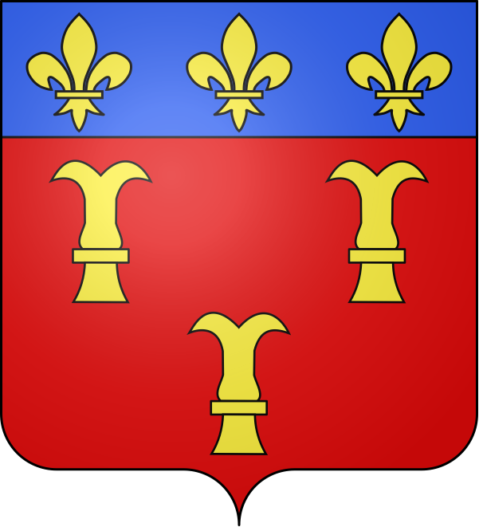

RoquemaureLe port fluvial et la relique de Saint Valentin


⟹ Port fluvial · Saint Valentin · Côtes-du-Rhône ⟸

Le territoire de Roquemaure s'inscrit dans la vallée du Rhône, grand axe de circulation depuis l'Antiquité entre le monde méditerranéen et l'intérieur des terres gauloises puis françaises, corridor commercial et militaire dont l'importance stratégique n'a cessé de façonner l'histoire des villes et bourgs installés sur ses rives.
Hannibal aurait franchi le Rhône à Roquemaure. Selon une tradition ancienne, c'est à hauteur de Roquemaure qu'en 218 avant notre ère, le jeune général carthaginois Hannibal aurait choisi de faire traverser le Rhône à toute son armée, éléphants de guerre compris, avant d'affronter les Gaulois massés sur la rive gauche du fleuve ; cet épisode, resté dans les mémoires antiques comme une prouesse militaire sans pareille, illustre déjà l'importance stratégique de ce point de franchissement du fleuve, resserré par un verrou rocheux naturel.
Un port fluvial actif sur le Rhône. Roquemaure s'est développée comme port fluvial important sur le Rhône, profitant de sa position pour le commerce du vin, du bois et des marchandises transitant entre Lyon et la Méditerranée, jusqu'à l'essor du chemin de fer au XIXe siècle qui réduit progressivement le trafic fluvial.
Le château, sentinelle du verrou rhodanien. Perché sur un éperon rocheux dominant le fleuve, le château de Roquemaure, attesté dès le XIe siècle, commandait à la fois la navigation nord-sud du Rhône et le passage est-ouest entre Languedoc et Provence. Aux mains d'un baron des comtes de Toulouse jusqu'à la croisade contre les Albigeois, il est remis en gage de fidélité au pape par Raymond VI lui-même le 18 juin 1209, avant d'être reconstruit au XIIIe siècle par le roi de France. Le pape Clément V, fondateur de la papauté avignonnaise, y aurait traversé le Rhône en avril 1314, tandis que sainte Catherine de Sienne s'y rend le 4 septembre 1376, sur l'invitation du duc d'Anjou qui fait alors du château sa résidence. En 1354, le viguier Gustave de Polignac fait creuser un fossé défensif face à la menace du Prince Noir, et le duc d'Anjou fait édifier les remparts de la ville sur le modèle de ceux d'Avignon. Ébranlé par un siège en 1590-1591, le château perd ensuite de son importance, servant tour à tour de prison puis de fonderie de plomb et d'argent, avant d'être vendu comme bien national en 1795 et arasé avant 1850 ; il n'en subsiste aujourd'hui que deux des sept tours d'origine, la tour carrée dite « des Carthaginois » et la tour de la Reine, du nom de Marie de Bretagne, épouse du duc d'Anjou.
Le vignoble et la protection contre le phylloxéra. Réputée pour son vignoble, la ville est également connue pour un épisode agricole particulier : en 1866, un négociant local aurait été le premier en France à repérer les ravages du phylloxéra, insecte ravageur venu d'Amérique qui allait détruire une grande partie du vignoble français dans les décennies suivantes. C'est également à Roquemaure, au XVIIIe siècle, que se met en place l'une des premières tentatives de réglementation de la production viticole locale, contribuant à forger le terme même de « Côte du Rhône ».
Un poète local à l'origine du chant de Noël « Minuit, Chrétiens ». C'est un enfant de Roquemaure, Placide Cappeau, négociant en vin de son état, qui rédige en 1843 le texte du célèbre cantique de Noël « Minuit, Chrétiens », mis en musique par Adolphe Adam ; il répond alors à la demande d'un prêtre local, Guillaume Clerc, soucieux de commercialiser vers Paris les vins de la Côte du Rhône par l'intermédiaire du pont récemment édifié.
Le fleuve, aussi précieux que redoutable, impose sa loi aux riverains : crues violentes, changements de lit et bancs de sable mouvants rendent la navigation périlleuse, tandis que le halage à contre-courant exige un travail harassant, longtemps assuré par des équipes d'hommes ou d'animaux de trait qui tiraient les gabarres chargées de marchandises depuis les chemins de halage aménagés sur les berges.

Les reliques de saint Valentin. En 1868, la paroisse de Roquemaure reçoit les reliques de saint Valentin, rapportées de Rome, qui font l'objet d'une vénération locale toujours vivace, la ville se présentant depuis comme un lieu de pèlerinage attaché à la Saint-Valentin.
L'installation de la papauté à Avignon au XIVe siècle transforme profondément la vallée du Rhône gardoise, dont plusieurs villes et bourgs deviennent des dépendances, des résidences ou des points d'appui du pouvoir pontifical, tandis que le grand commerce fluvial, denrées agricoles, vins, bois et matières premières, continue de transiter par le fleuve entre Lyon et la Méditerranée.
Le XXe siècle transforme la vallée du Rhône gardoise avec l'aménagement hydroélectrique et nucléaire du fleuve, notamment le site de Marcoule près de Bagnols-sur-Cèze, qui bouleverse l'économie régionale, tandis que le vignoble de Côtes-du-Rhône, replanté après la crise du phylloxéra qui ravage l'ensemble du vignoble français à la fin du XIXe siècle, continue de structurer le paysage et l'identité agricole des coteaux.

Aujourd'hui, Roquemaure conserve une identité marquée par ce passé : ancien port fluvial du rhône, la commune s'inscrit pleinement dans la zone Vallée du Rhône, entre mémoire patrimoniale et vie locale contemporaine. Cette continuité, entre héritage et vie quotidienne, fait aujourd'hui tout l'intérêt d'une visite attentive à l'histoire du lieu.
Roquemaure a vécu du fleuve et de la vigne, avant de devenir, par la grâce d'une relique rapportée de Rome en 1868, l'une des villes françaises associées à la Saint-Valentin.
Synthèse historique — L'Âme des Régions